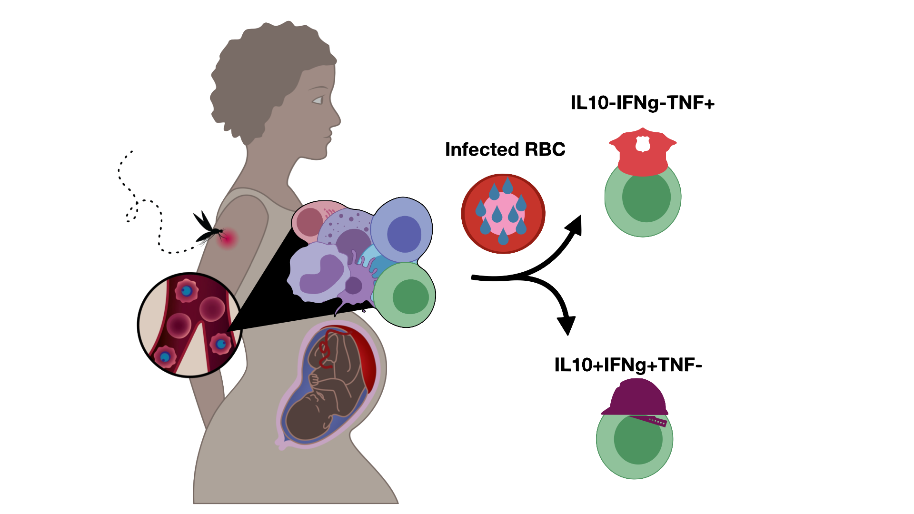
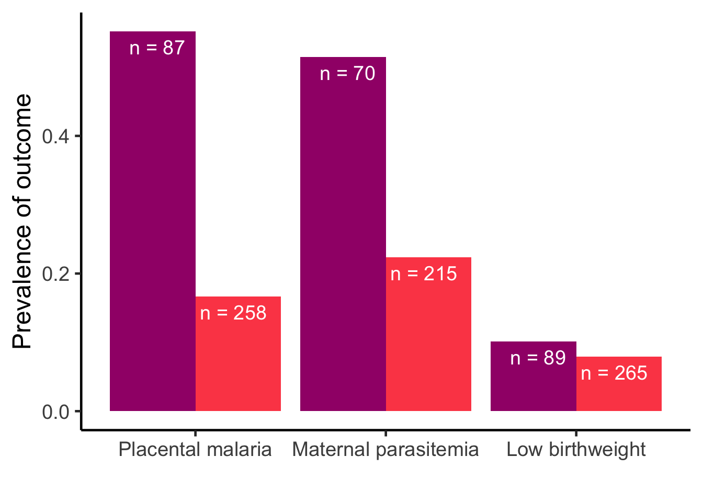
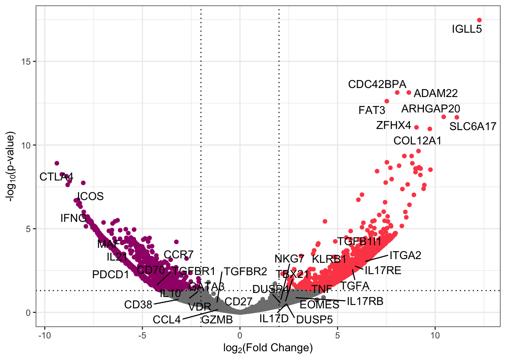

T helper cells shift from producing regulatory to inflammatory cytokines in response to malaria during pregnancy

Cellular correlates of gravidity dependent immunity to malaria
Adam Kirosingh 1, 
adamsk@stanford.edu
Lauren De La Parte1 Maureen Ty1 Alea Delmastro1 Abel Kakuru2 Mary K Muhindo2 Moses Kamya2 Margaret Feeney3 Grant Dorsey3 Prasanna Jagannathan1
1 Department of Microbiology & Immunology Stanford University, CA, USA
2 Infectious Diseases Research Collaboration, Kampala, Uganda
3 University of California San Francisco, CA, USA
With successive pregnancies, women eventually develop immunity against adverse consequences of malaria in pregnancy.

Identification of cellular correlates of protection against malaria in pregnancy would inform vaccine development efforts.
Our goal is to determine whether increasing gravidity is associated with specific maternal T helper subsets and if these subsets correlate with protection against malaria in pregnancy.
Methods
We leveraged flow cytometry to analyze maternal samples at the time of enrollment (end of first trimester) exposed to infected red blood cells. To follow up on inflammatory and regulatory CD4+ cells we sorted them using a cytokine capture assay followed by bulk RNA-seq.
Results

IL-10 producing memory CD4+ cells are positively associated with parasite density at enrollment while TNFa is negatively associated with parasite density.

Increasing gravidity shifts malaria-specific CD4+ response from IL-10 (regulatory) to TNF (inflammatory)

These IL-10+, IFNg+, IL21+ express a Tr1 phenotype while the TNFa population is still under investigation.
References: 1. Rogerson et al Lancet ID 2018 2. Harrington, Kakuru, Jagannathan, Parasite Immunology 2019. 3. Kakuru et al NEJM 2016.
Acknowledgements: We thank the study participants for their participation and acknowledge the tireless work by the PROMOTE study staff. Funding by Bill and Melinda Gates Foundation OPP 1113682 and NIH/NICHD HD059454 and the CMB training grant NIH 5 T32 GM007276